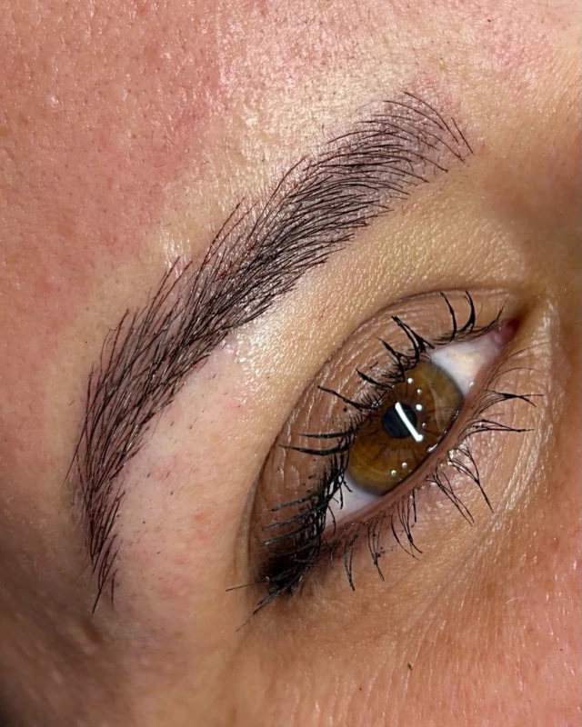

01
Sobrancelhas fios desenhados um a um
O desenho acompanha o seu rosto: o início, o ponto mais alto e o final são estudados antes de qualquer pigmento. Na avaliação, vale conversar sobre o formato que você usa hoje, o que gostaria de mudar e como é a sua rotina com a pele.
Castanho claroCastanho médioCastanho escuroCafé
Tons ilustrativos — a cor é definida na avaliação.